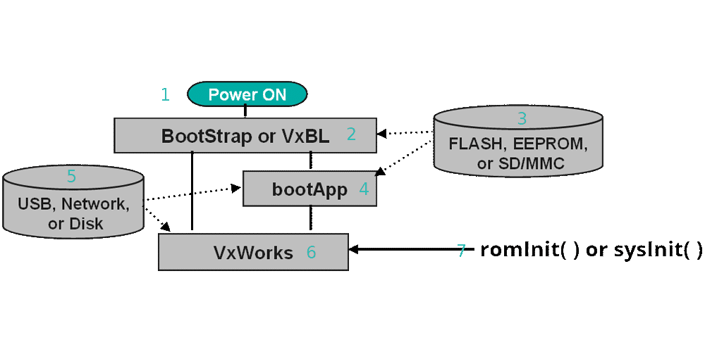

To start working with the hardware in a VxWorks project you need to deploy a kernel image to it.
How does a target boot?
When you write the code for a target in Workbench you are modifying the kernel image, but how do you deploy the kernel image? You must use a bootloader. This is code that deploys the kernel image and then executes the startup sequence for the kernel.
VxWorks supports a variety of boot strategies, many of which are board specific.
For board-specific information, see the readme.md file in your BSP directory.
installDir/vxworks/release/source/os/arch
All BSPs start in this directory, find the CPU architecture that you are using and then choose the board vendor.
VxWorks primarily operates with a two-stage bootloader model. Follow the image below to see how this model interacts with the system.

Power On
This is the power signal going to the target.
Stage 1 bootloader
In this example VxBL launches but it can be any stage 1 bootloader. You might see this stage be referred to as BootStrap code.
Physical Storage
This is the physical storage you want to use to launch the bootloader. This can be Flash memory, SD card, SSD, HDD or some other physical drive.
Stage 2 Bootloader
A stage 2 bootloader requires a stage 1 bootloader to help get things started. The stage 2 is able to do more heavy lifting since it's not limited to space on a drive for its code, just the memory on the target.
Network Connection
A stage 2 bootloader can use the network that it is connected to help launch the kernel image. This can be from a File Transfer Protocol (FTP) or a Network File System (NFS) server.
The Kernel Image
After the bootloaders do their magic, the kernel image is launched. Your VxWorks project is now running!
ROM or System?
When VxWorks launches and it needs to initialize the code, it can either use a romInit or a sysInit.
ROM or read only memory is used when you need to boot the system rapidly.
SysInit is the default initialization mode.
To make full use of the VxBL and the BootApp, examine their commands in the chart below.
VxBL Commands
When running VxBL, if you ever need the list of commands type help in the terminal.
Here is a list of the commands for reference:
fdt - perform device tree operations: fdt <cmd> <arg>